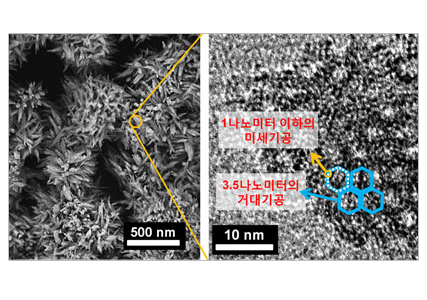

연구성과 10선
연구성과 10선
KAIST RESEARCH ACHIEVEMENTS
벌집 모양의 고효율
제올라이트 촉매 물질 합성
화학과 특훈교수 유룡
요약
25억 달러 넘는 촉매 시장 이끌 신기술 기능성 나노물질 연구단은 벌집 모양을 가지고 있는 고효율 제올라이트 촉매 물질을 합성하는 데 성공했다. 이는 크기 3.5㎚의 거대기공이 벌집 모양의 연탄구멍처럼 뚫려 있고, 그 기공을 지탱하는 골격에는 크기 1㎚이하 미세기공이 규칙적으로 뚫려있는 형태로 기존의 촉매 물질들에 비해 월등히 뛰어난 촉매 활성을 보여주고 있다.
연구내용
제올라이트는 모래의 주성분인 실리카와 알루미늄이 규칙적으로 연결돼 형성된 결정성 물질이다. 결정 내부에는 작은 분자들이 드나들 수 있는 지름 1㎚ 이하 크기의 수많은 미세기공이 규칙적으로 배열돼 있다. 머리카락 굵기의 약 1/1,000정도의 크기인 각각의 구멍들은 나노 크기 영역에서 물질의 반응을 촉진시키는 역할을 할 뿐 아니라, 구멍 크기에 맞는 분자만 선택적으로 통과시키는 '필터' 역할도 한다. 즉 반응 분자를 선택적으로 제올라이트 결정 내부로 확산시켜 활성점에서 반응을 일으킨 후, 형성된 분자를 결정 외부로 배출하는 것이다. 이러한 특징으로 제올라이트는 분리제 및 가솔린 생산 등에서 쓰이는 석유화학 촉매로 각광받고 있다. 문제는 미세 기공이 3차원적으로 촘촘한 배열을 이루다 보니 이를 통과한 분자들이 잘 움직이지 않아 제올라이트 내부의 미세 기공을 막아버려서 촉매 활성이 급격히 저하된다는 점이다.
반응이 끝난 분자가 자리를 차지한 채 움직이지 않으니 반응을 할 새로운 분자가 들어갈 자리가 없어 금세 반응성이 떨어져버리는 것이다. 뿐만 아니라 미세 기공의 크기보다 큰 분자들의 경우에는 제올라이트의 미세 기공 내부로 들어 갈 수 없기 때문에 촉매로 활용이 불가능하다. 제올라이트 분야에서 이 문제를 해결하는 신개념의 물질을 합성하는 것은 오랜 숙원 과제였다.

①벌집모양의 제올라이트의 합성은 염기성 수용액에 제올라이트 구조유도 계면활성제와 실리카를 첨가하면서 시작된다. 계면활성제는 비누 속에 존재하는 분자로서 물을 좋아하는 친수성 머리 부분과 물을 싫어하는 소수성 꼬리 부분으로 구성된다. 이 연구에서는 위 그림에서 보는 것과 같은 새로운 구조의 계면활성제를 설계하고 이를 유기 합성을 통해 준비하여, 벌집모양의 제올라이트를 합성하는데 구조유도체로 활용하였다. 이 수용액 내에서 계면활성제는 꼬리(하얀색)들간의 소수성 상호작용으로 인해 자가 조립(Selfassembly)되어 마이셀(micelle)이라고 하는 거대 분자를 형성하고, 이 마이셀은 벌집형태로 규칙적으로 배열된다. 이와 동시에, 양전하를 가지는 계면활성제의 머리 부분은(빨간색 공으로 표시되어 있는 부분)음전하를 띠는 실리카들과 결합되어 벌집구조의 골격을 형성한다. ② 이렇게 만들어진 용액을 압력솥에 넣어 고온(140도)의 열을 가하면, 벌집 구조의 골격을 이루고 있는 실리카들이 결정화되어 제올라이트로 변환된다. ③ 제올라이트로 변환된 실리카 골격은 600도 이상의 고온에서도 안정하기 때문에, 고온처리를 (550도)통하여 계면활성제를 선택적으로 제거한다.④ 유기계면활성제가 제거된 공간에는 벌집모양으로 배열된 3.5 nm의 거대 기공과 1 nm 이하의 미세기공이 형성되어, 최종적으로 벌집모양의 제올라이트를 얻어낼 수 있게 된다.
 그림 2. 결정의 내부 구조가미세기공으로 이루어져 보여주는 투과전자현미경
 그림 3. 벌집구조 제올라이트의 결정 형상을 보여주는 주사전자현미경
그림 3. 벌집구조 제올라이트의 결정 형상을 보여주는 주사전자현미경
의미와 전망
기존의 실험들에서는 초고체의 양과 단단한 정도 중 하나만을 측정했기 때문에 상호 비교해보는 해석에 한계가 있었던 반면, 똑같은 고체 헬륨의 두 가지 물리량을 함께 측정할 수 있으면 둘의 상관관계를 명확히 볼 수 있기 때문이다. 만약 단순히 고체 헬륨이 더 단단해지는 현상을 초고체 상태의 발현으로 오해하고 있는 것이라면, 회전식 냉각장치의 회전 속도에 따라 두 물리량이 변하는 경향이 같아야 한다. 또한 회전식 냉각장치의 회전 속도를 바꾸었을 때, 고체 헬륨의 단단한 정도가 초고체의 양과 같은 양상으로 변화하지 않는다면 두 현상은 원인이 다른 독립적인 현상이라고 결론지을 수 있다. 결국 2010년 KAIST-RIKEN 공동연구팀의 실험 결과 두 현상은 실제로 다른 현상임이 밝혀졌다. 실제로 고체가 초유체적 성질을 가진다는 것을 다시 한 번 증명한 셈이다. 이로써 초고체의 존재 여부를 둘러싼 가장 큰 논란에 마침표를 찍었다.
연구비 지원
ㆍ교육과학기술부 『국가과학자 연구지원 사업』 (과제 번호 : 20100029665)
수상
ㆍ국내특허(출원번호 : 10-2010-0064200)
ㆍPCT 특허(출원번호 : PCT/KR2011/004128)
관련문헌
ㆍDirecting Zeolite Structures into Hierarchically Nanoporous Architectures. Science 333, 328-332 (2011)